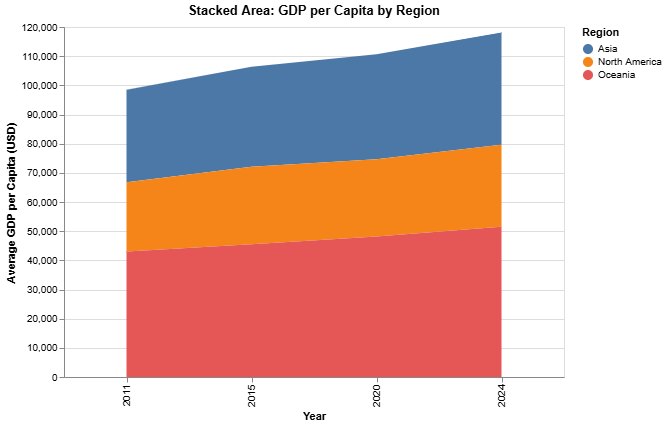
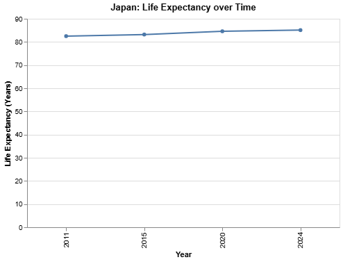
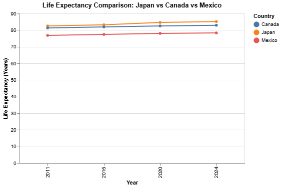

Stacked Area: GDP per Capita by Region
This stacked area chart shows how regions grow economically over time. The height of each color band represents GDP per capita averages.
Line Chart: Japan Life Expectancy
Japan's life expectancy slowly increases across years, showing improved healthcare and societal well-being.
Comparative Line: Japan, Canada, Mexico
This chart compares life expectancy trends for three countries. Japan and Canada stay higher than Mexico but all show improvements.